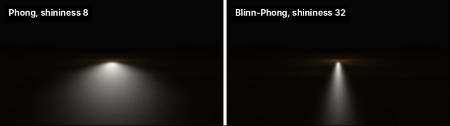

Advanced Lighting
Blinn-Phong#
The Phong specular term has a flaw that shows on rough surfaces viewed at a low angle. A small change to the formula, proposed by James Blinn in 1977, fixes it and has been the default ever since.
The problem with Phong#
Phong measures the angle between the view direction and the reflected light direction. When the viewer and the light are on the same side of a surface and both near the horizon, that angle can exceed 90 degrees. The dot product goes negative and is clamped to zero, so the highlight is cut off abruptly.
With a high shininess exponent the highlight is tiny and the cut-off region is never reached. With a low exponent, such as a wide, soft highlight on a floor, you get a visible hard edge where the specular light suddenly stops.
The halfway vector#
Blinn-Phong replaces the reflection vector with the halfway vector: the unit vector exactly between the light direction and the view direction.
float3 halfwayDir = normalize(lightDir + viewDir);
The specular strength is then the angle between the halfway vector and the normal:
float spec = pow(max(dot(normal, halfwayDir), 0.0), shininess);
When the view direction lines up perfectly with the reflection, the halfway vector lines up with the normal, so both models agree on where the highlight is brightest. The difference is that the angle between the normal and the halfway vector never exceeds 90 degrees as long as the light is above the surface, so the cut-off cannot happen.
In the shader#
Only the specular lines of the lighting functions change:
static float3 calcPointLight(PointLight light, Surface s) {
float3 toLight = light.position - s.position;
float distance = length(toLight);
float3 lightDir = toLight / distance;
float diff = max(dot(s.normal, lightDir), 0.0);
float3 halfwayDir = normalize(lightDir + s.viewDir);
float spec = pow(max(dot(s.normal, halfwayDir), 0.0), s.shininess);
float attenuation = 1.0 / (distance * distance);
...
}
Adjusting shininess#
The angle to the halfway vector is smaller than the angle Phong uses, roughly half of it. The same exponent therefore gives a larger highlight with Blinn-Phong. To get a similar look, multiply your old shininess values by somewhere between 2 and 4.
A test scene#
Lay a large textured floor under a single point light close to the surface, and add a uniform that switches between the two formulas:
float spec;
if (uniforms.useBlinn) {
float3 halfwayDir = normalize(lightDir + s.viewDir);
spec = pow(max(dot(s.normal, halfwayDir), 0.0), 32.0);
} else {
float3 reflectDir = reflect(-lightDir, s.normal);
spec = pow(max(dot(s.viewDir, reflectDir), 0.0), 8.0);
}
With Phong, the highlight on the floor is chopped off along a curve. With Blinn-Phong it fades out smoothly and stretches toward the horizon, which is how real glossy floors behave.
Booleans in uniforms
MSL's bool is one byte, and so is Swift's Bool, but alignment and padding around them are easy to get wrong. Many people use a uint or int flag (UInt32 in Swift) in uniform structs to keep layouts obvious.
Blinn-Phong is used for the rest of this section. It is still an empirical model, and the PBR section will replace it, but the halfway vector stays: it is central to physically based specular reflection as well.
